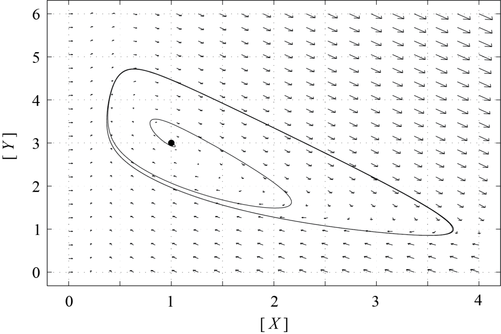
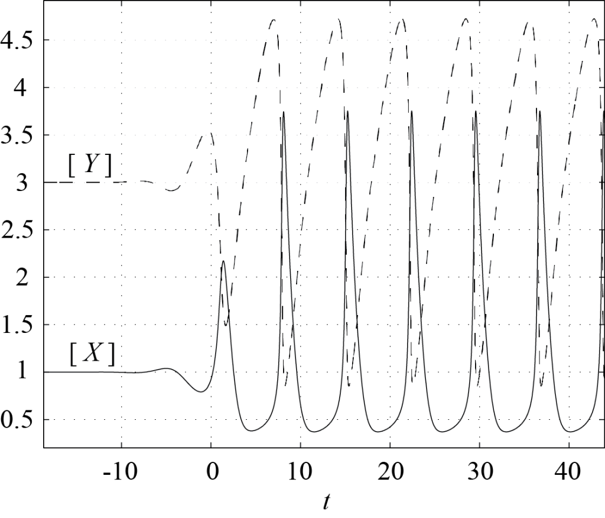
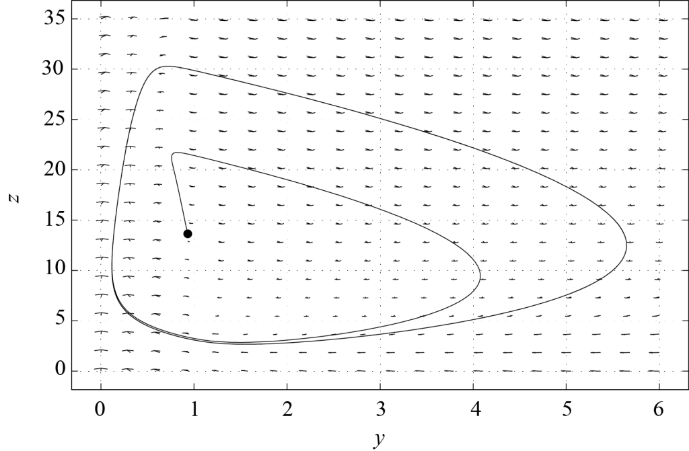

$latex \begin{array}{ccc} & k & \\ A + B &\rightarrow& C, \end{array}$
di mana $latex A$, $latex B$, dan $latex C$ menyatakan zat kimia, $latex A$ dan $latex B$ adalah reaktan, $latex C$ adalah produk, dan $latex k > 0$ adalah konstanta laju reaksi. Hukum aksi massa mendeskripsikan bagaimana konsentrasi $latex A$, $latex B$, dan $latex C$ berubah akibat reaksi ini. Gagasannya adalah bahwa reaksi akan berlangsung jika zat kimia $latex A$ dan $latex B$ bertumbukan, dan jika energinya lebih tinggi daripada energi aktivasi reaksi. Jumlah tumbukan berhasil (yaitu tumbukan yang menghasilkan reaksi) antara $latex A$ dan $latex B$ sebanding dengan hasil kali konsentrasi $latex A$ dan $latex B.$ Konstanta kesebandingannya adalah konstanta $latex k$. Dengan demikian, kita menuliskan persamaan diferensial berikut untuk nilai harapan $latex [A]$, $latex [B]$, dan $latex [C]$ (ingat bahwa kita berada dalam keadaan dengan jumlah molekul reaktan dan produk yang besar)$latex \displaystyle \frac{d [A]}{d t} = \frac{d [B]}{d t} = - k [A]\,[B] = - \frac{d [C]}{d t},$
di mana $latex [I]$ menyatakan konsentrasi zat kimia $latex I$. Jika $latex A = B$, sehingga reaksi kimianya adalah$latex \begin{array}{ccc} & k & \\ 2 A &\rightarrow& C, \end{array}$
kita memerlukan dua molekul $latex A$ untuk membentuk satu molekul produk $latex C$, yang menghasilkan$latex \displaystyle \frac{1}{2} \frac{d [A]}{d t} = - k [A]^2 = - \frac{d [C]}{d t}.$
Jika suatu reaksi bersifat reversibel, misalnya jika$latex \begin{array}{ccc} & k_1 & \\ A + B & \rightleftharpoons & C, \\ & k_2 & \end{array}$
maka $latex A$ dikonsumsi dengan laju relatif $latex k_1$ dan diproduksi dengan laju relatif $latex k_2$, sehingga$latex \displaystyle \frac{d [A]}{d t} = - k_1 [A]\, [B] + k_2 [C],$
dan demikian pula untuk $latex [B]$ dan $latex [C]$. Terakhir, jika suatu proses reaksi melibatkan lebih dari satu reaksi kimia, laju perubahan suatu zat kimia akibat setiap reaksi dijumlahkan untuk memperoleh laju perubahan total zat kimia tersebut. Misalnya, andaikan kita memiliki sistem yang dideskripsikan oleh$latex \begin{array}{ccc} & k_1 & \\ A + B & \rightleftharpoons & C, \\ & k_2 & \end{array}$
$latex \begin{array}{ccc} & k_3 & \\ C + A &\rightarrow & D. \end{array}$
Maka konsentrasi $latex A$ berevolusi menurut$latex \displaystyle \frac{d [A]}{d t} = - k_1 [A]\,[B] + k_2 [C] - k_3 [C]\,[A],$
dan persamaan laju untuk $latex B$, $latex C$, dan $latex D$ adalah$latex \displaystyle \frac{d [B]}{d t} = - k_1 [A]\,[B] + k_2 [C],$
$latex \displaystyle \frac{d [C]}{d t} = k_1 [A]\,[B] - k_2 [C] - k_3 [C]\,[A],$
$latex \displaystyle \frac{d [D]}{d t} = k_3 [C]\,[A].$
Perhatikan bahwa reaksi bersih yang berkaitan dengan proses ini adalah $latex 2 A + B \rightarrow D$. Persamaan laju harus dituliskan untuk setiap tahap yang terlibat dalam reaksi, bukan berdasarkan reaksi bersihnya. Dengan demikian, reaksi kimia dapat dideskripsikan dalam bentuk persamaan diferensial biasa nonlinear terkopel, sehingga teori sistem dinamik dapat diterapkan pada analisisnya.$latex \begin{array}{ccc} & k_1 & \\ A &\rightarrow& X, \end{array}$
$latex \begin{array}{ccc} & k_2 & \\ 2 X + Y &\rightarrow& 3 X, \end{array}$
$latex \begin{array}{ccc} & k_3 & \\ B + X &\rightarrow& Y + D, \end{array}$
$latex \begin{array}{ccc} & k_4 & \\ X &\rightarrow& E, \end{array}$
dengan semua konstanta laju $latex k_i$ sama dengan 1. Persamaan laju yang bersesuaian untuk $latex [X]$ dan $latex [Y]$ membentuk model Brusselator, yang berbentuk$latex \displaystyle \left\{\begin{align*} \displaystyle \frac{d [X]}{d t} & = [A] + [X]^2\,[Y] - [B]\,[X] - [X],\\ \displaystyle \frac{d [Y]}{d t} & = - [Y]\,[X]^2 + [B]\,[X], \end{align*}\right. \qquad (8.1)$
dengan $latex [A]$ dan $latex [B]$ sebagai parameter. Model ini memiliki sebuah titik tetap tunggal $latex P$, yang diberikan oleh $latex [X]=[A]$ dan $latex [Y]=[B]/[A]$. Dari sudut pandang analisis dimensi, ungkapan-ungkapan ini mungkin tampak aneh, tetapi dimensinya tidak lagi terlacak ketika kita menetapkan semua konstanta laju reaksi (yang memiliki dimensi berbeda) sama dengan satu (lihat soal-soal). [caption id="attachment_59" align="alignnone" width="800"]
Gambar 8.1. Bidang fase sistem (8.1), dengan [A]=1 dan [B]=3, yang diplot menggunakan perangkat lunak PPLANE. [Deskripsi Gambar][/caption]Matriks Jacobi dari (8.1) di titik tetap $latex P$ adalah$latex J(P) = \left(\begin{array}{cc} [B] - 1 & [A]^2 \\ -[B] & -[A]^2 \end{array}\right),$
dan determinannya sama dengan $latex [A]^2 > 0$. Karena itu, stabilitas titik tetap bergantung pada tanda jejak $latex J(P)$, yang sama dengan $latex T = [B]-1-[A]^2$. Mudah dilihat bahwa jika $latex [X]$ atau $latex [Y]$ cukup besar, maka $latex {d[Y]} / {d[X]} \simeq -1,$ dan lintasan hampir berupa garis lurus dengan kemiringan -1. Namun, ketika $latex [Y]$ mendekati 0, lintasan-lintasan ini tidak dapat meninggalkan kuadran pertama karena $latex d[Y]/d t \gt 0$ jika $latex [Y]=0$ dan $latex [X] \gt 0$. Karena pada saat itu kita juga memiliki $latex d[X]/dt \lt 0$ jika $latex [X]$ cukup besar, kita memperkirakan lintasan akan dibawa kembali menuju daerah tempat $latex [X]$ dan $latex [Y]$ sama-sama berorde satu. [caption id="attachment_60" align="alignnone" width="800"]
Gambar 8.2. Kebergantungan [X] dan [Y] terhadap waktu untuk lintasan pada Gambar 8.1, yang diplot menggunakan perangkat lunak PPLANE. [Deskripsi Gambar][/caption]Jika $latex P$ stabil, yaitu jika $latex T \lt 0$, maka semua lintasan seharusnya berakhir di $latex P$. Namun, jika $latex P$ adalah simpul tak stabil atau spiral tak stabil, lintasan tidak dapat konvergen menuju $latex P$, dan dinamika tersebut harus memiliki atraktor lain. Gambar 8.1 memperlihatkan potret fase (8.1) dengan $latex [A]=1$ dan $latex [B]=3$ (sehingga $latex T = 1 > 0$). Atraktor lain tersebut adalah suatu siklus limit; setiap lintasan dalam daerah tarikannya—kecuali solusi yang dimulai tepat di P—konvergen menuju siklus tersebut. Hanya satu lintasan yang diplot dalam gambar ini. Grafik $latex [X]$ dan $latex [Y]$ sebagai fungsi waktu yang bersesuaian ditampilkan pada Gambar 8.2. Terlihat bahwa pada siklus limit, $latex [X]$ tetap kecil hampir sepanjang waktu, lalu dengan cepat meningkat ke nilai maksimum dan kembali menuju nol secara periodik. Ketika $latex [X]$ meningkat, $latex [Y]$ turun secara mendadak, lalu perlahan meningkat kembali ke nilai maksimumnya sementara $latex [X]$ tetap kecil. Osilasi relaksasi semacam itu merupakan ciri khas banyak reaksi kimia osilatori.$latex \begin{array}{ccc} & k_1 & \\ A + Y &\rightarrow& X, \end{array}$
$latex \begin{array}{ccc} & k_2 & \\ X + Y &\rightarrow& P, \end{array}$
$latex \begin{array}{ccc} & k_3 & \\ B + X &\rightarrow& 2 X + Z, \end{array}$
$latex \begin{array}{ccc} & k_4 & \\ 2 X &\rightarrow& Q, \end{array}$
$latex \begin{array}{ccc} & k_5 & \\ Z &\rightarrow& f Y, \end{array}$
dengan $latex [A]$ dan $latex [B]$ konstan, serta $latex f$ merupakan faktor stoikiometri. Persamaan laju yang bersesuaian adalah$latex \displaystyle \left\{\begin{align*} \displaystyle \frac{d [X]}{d t} & = k_1 [A]\, [Y] - k_2 [X]\,[Y] + k_3 [B]\,[X] - 2 k_4 [X]^2,\\ \displaystyle \frac{d [Y]}{d t} & = - k_1 [A]\, [Y] - k_2 [X]\,[Y] + k_5 f [Z], \\ \displaystyle \frac{d [Z]}{d t} & = k_3 [B] \, [X] - k_5 [Z]. \end{align*}\right.$
Field dan Noyes (1974) mendefinisikan besaran tak berdimensi berikut$latex x = \displaystyle \frac{[X]}{X_0},\qquad y = \displaystyle \frac{[Y]}{Y_0},\qquad z = \displaystyle \frac{[Z]}{Z_0},\qquad \tau = \displaystyle \frac{t}{T_0},$
dengan$latex X_0 = \displaystyle \frac{k_1}{k_2} [A],\quad Y_0 = \displaystyle \frac{k_3}{k_2} [B], \quad Z_0 = \displaystyle \frac{k_1 k_3}{k_2 k_5} [A] [B], \quad \displaystyle T_0 = \frac{1}{\sqrt{k_1 k_3 [A] [B]}}.$
Dengan demikian, bentuk tak berdimensi Oregonator menjadi$latex \displaystyle \left\{\begin{align*} \displaystyle \frac{d x}{d \tau} & = s (y - x y + x - q x^2),\\ \displaystyle \frac{d y}{d \tau} & = \frac{1}{s} (- y - x y + f z), \\ \displaystyle \frac{d z}{d \tau} & = \omega (x - z), \end{align*}\right. \qquad (8.2)$
dengan$latex s = \displaystyle \sqrt{\frac{k_3 [B]}{k_1 [A]}}, \qquad q = \displaystyle \frac{2 k_1 k_4 [A]}{k_2 k_3 [B]}, \qquad \omega = \displaystyle \frac{k_5}{\sqrt{k_1 k_3 [A] [B]}}.$
Dengan mengasumsikan bahwa $latex x$ dengan cepat mencapai nilai keadaan tunak, Persamaan (8.2) dapat direduksi menjadi sistem dinamik dua dimensi. Memang, menetapkan $latex d x / d \tau = 0$ menghasilkan$latex x = \displaystyle \frac{1}{2 q} \left(1 - y + \sqrt{(1 - y)^2 + 4 q y}\right),$
dan dengan menyubstitusikan ekspresi ini ke dalam (8.2), diperoleh$latex \displaystyle \left\{\begin{align*} \displaystyle \frac{d y}{d \tau} & = \frac{1}{s} \left(- y - \frac{y}{2 q} \left(1 - y + \sqrt{(1 - y)^2 + 4 q y}\right) + f z \right), \\ \displaystyle \frac{d z}{d \tau} & = \omega \left(\frac{1}{2 q} \left(1 - y + \sqrt{(1 - y)^2 + 4 q y}\right) - z \right). \end{align*}\right. \qquad (8.3)$
[caption id="attachment_61" align="alignnone" width="800"]
Gambar 8.3: Bidang fase sistem (8.3), dengan f=1, s=1, q=0.01 dan ω=2, yang diplot menggunakan perangkat lunak PPLANE. [Deskripsi Gambar][/caption]Selanjutnya, kita menetapkan $latex f = 1$. Field dan Noyes (1974) memperkirakan nilai $latex s$, $latex q$, $latex \omega$, serta semua variabel tak berdimensi untuk reaksi Belousov-Zhabotinsky. Rinciannya dapat ditemukan dalam artikel mereka yang berjudul Oscillations in chemical systems. IV. Limit cycle behavior in a model of a real chemical reaction. Mereka juga menyimpulkan bahwa model Oregonator mampu memprediksi osilasi konsentrasi zat-zat kimia yang terlibat dalam proses reaksi. Parameter yang realistis membuat masalah ini sangat kaku (yaitu, terdapat skala waktu karakteristik yang sangat pendek maupun sangat panjang, yang merupakan ciri khas sistem eksitabel), tetapi model (8.3) juga memperlihatkan osilasi dalam kasus yang cukup kaku. Gambar 8.3 menunjukkan bidang fase model (8.3) dengan parameter $latex s = 1$, $latex q = 0.01$, dan $latex \omega = 2$. Lintasan yang bermula di dekat titik tetap, dengan $latex y$ dan $latex z$ keduanya tak nol, berkonvergensi menuju siklus limit. Akibatnya, variabel $latex y$ dan $latex z$ berosilasi terhadap waktu, demikian pula $latex [X]$, $latex [Y]$, dan $latex [Z]$ dalam model Oregonator.$latex \begin{array}{ccccc} & k_1 & & k_3 & \\ A + B & \rightleftharpoons & C &\rightarrow & B + D,\\ & k_2 & & & \end{array}$
$latex \begin{array}{ccc} & k_4 & \\ B + E & \rightleftharpoons & F. \\ & k_5 & \end{array}$
$latex \begin{array}{ccc} & k_1 & \\ A + B & \rightleftharpoons & C. \\ & k_2 & \end{array}$
$latex \begin{array}{ccc} & k & \\ n \, A &\rightarrow& B, \end{array}$
dengan $latex n$ merupakan bilangan bulat positif.$latex \begin{array}{ccc} & k_1 & \\ A + X & \rightarrow & 2 X, \end{array}$
$latex \begin{array}{ccc} & k_2 & \\ X + Y & \rightarrow & 2 Y, \end{array}$
$latex \begin{array}{ccc} & k_3 & \\ Y & \rightarrow & P. \end{array}$